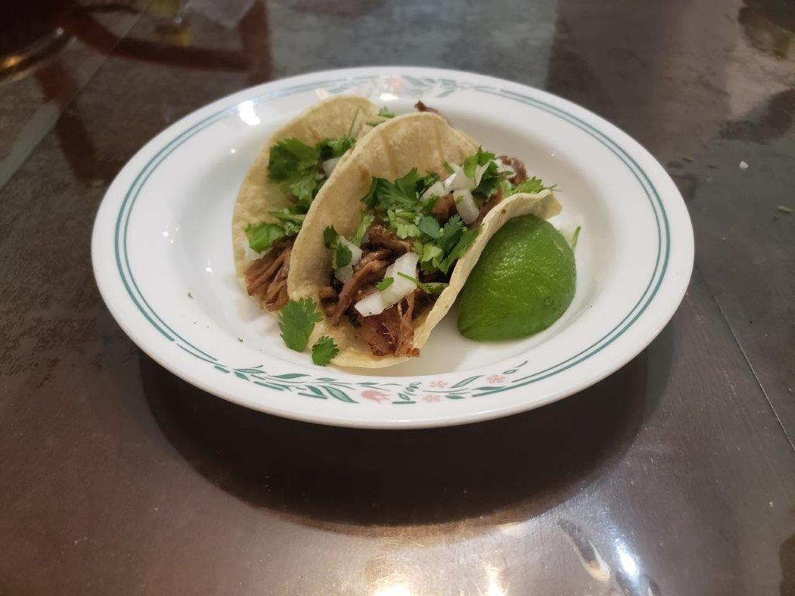

Carnitas

Ingredients:
- 4 lb Pork shoulder, skinless, boneless
- 2 1/2 tsp Salt
- 1 tsp Black pepper
- 1 tbsp Dried oregano
- 2 tsp Cumin
- 1 tsp Chili powder
- 1 tbsp Olive oil
- 1 Onion, roughly chopped
- 1 Jalapeño, deseeded to taste, roughly chopped
- 6 cloves Garlic, minced
- 3/4 cup Orange juice
- 1 tbsp Vegetable oil
Instructions:
- Combine the salt and pepper and then rub it all over the pork shoulder. Then, combine the oregano, cumin, chili powder, and olive oil and do the same.
- Place the pork shoulder, fat side up, into a slow cooker. Add in the onion, jalapeño, and garlic over the pork. Then, squeeze in the orange juice.
- Slow Cook on low for 10 hours or on high for 7 hours.
- Remove the pork from the slow cooker and let cool slightly for a few minutes. Reserve the liquid from the slow cooker. Then, shred the pork using two forks.
- Heat the 1 tbsp of oil in a large non stick pan over high heat. Spread pork in the pan and drizzle over some of the juices, about 1/4-1/3 cup. Wait until the juices evaporate and the bottom side is golden brown and crusty. Turn and very briefly sear the other side. Do not sear the other side for very long or it will become too crispy.
- Remove pork from the pan. Repeat in batches without crowding the pan.
- Drizzle with more of the juices right before serving. Serve in tacos with raw white onion and cilantro, with Mexican red rice, or any preferred way.